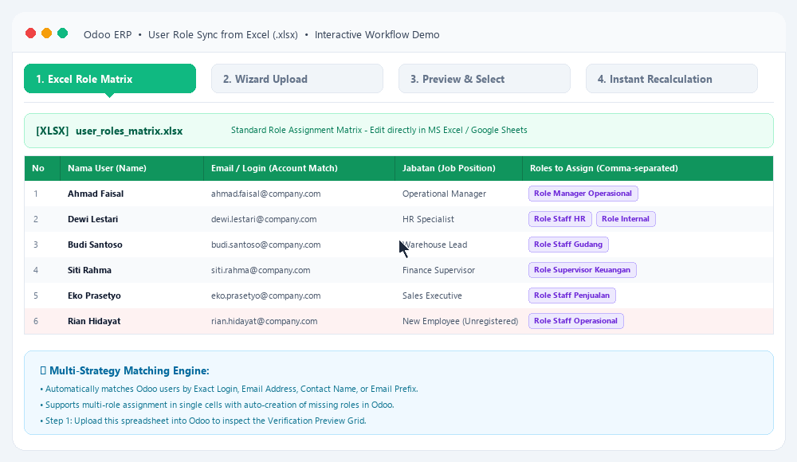

A complete, enterprise-grade solution to import, map, verify, and batch-synchronize user access roles directly from Microsoft Excel spreadsheets (.xlsx) with granular selective controls and instant security group recalculation.
Watch how seamlessly user roles are prepared in Excel, verified with selective toggles, and synchronized into Odoo with instant security recalculation.

Choose the format that matches your organizational workflow: map existing role definitions or generate dynamic module matrices.
Ideal for companies with predefined roles (e.g., "Role Manager Operasional", "Role Staff Keuangan"). Assign one or multiple roles per user in a single cell.
| Nama User | Email / Login | Jabatan | Roles (Comma Separated) |
|---|---|---|---|
| Ahmad Faisal | ahmad@company.com | Manager | Role Manager Operasional |
| Dewi Lestari | dewi@company.com | Staff HR | Role Staff HR, Role Internal |
Auto-detects all installed Odoo apps in your database and creates dedicated columns with dropdown choices (Create, Read, Edit / Read Only / -).
| Nama User | Sales | Purchase | Accounting |
|---|---|---|---|
| Budi Santoso | Create, Read, Edit | Read Only | - |
| Siti Rahma | Read Only | Create, Read, Edit | Create, Read, Edit |
Designed for safety, transparency, and ease of use. No blind imports—always preview and verify first.
Upload your Excel matrix file or click Download Template to generate a customized spreadsheet aligned with your current installed apps.
Review the verification grid. Inspect matched user accounts, check target roles, and use toggle switches to selectively include or exclude rows.
Click confirm to create role lines and immediately execute group calculation so menus, permissions, and record rules update on the fly.
Engineered with enterprise best practices to handle complex permission setups effortlessly.
Full control over which rows to process. Unchecked rows are completely untouched, allowing staged rollouts or updating specific branches without modifying other users.
Exports ready-to-use Excel templates containing dropdown validations dynamically matched to the module categories currently installed in your database.
Matches users case-insensitively using Login, Email, Full Name, or Username Prefix. Strips unwanted whitespace and prevents duplicate creations.
When enabled, new roles mentioned in the spreadsheet are created automatically in res.users.role with baseline Internal User permissions attached.
Triggers standard OCA set_groups_from_roles(force=True) immediately after syncing. Menus, action rights, and record rules update seamlessly.
Built cleanly on top of the community standard base_user_role. Works hand-in-hand with standard role expiry dates, role lines, and implied groups.
To ensure maximum flexibility when dealing with real-world spreadsheets from HR or IT departments, the wizard uses a 4-tier cascading matching engine:
Matches login case-insensitively (e.g. budi.santoso).
Matches email address (e.g. budi@company.com).
Matches user's display name in Odoo contact card.
Extracts username prefix prior to @ if full email differs from login.
Safety First: If a row in Excel does not match any user in Odoo, it is flagged as Belum Ada di Odoo and automatically unchecked. It will not cause errors, crashes, or unintended user record creations.
Role Staff Penjualan, Role Staff Logistik). The wizard will assign all specified roles to that user.
Developed & Maintained by CV. Anugerah Khair Arkananta